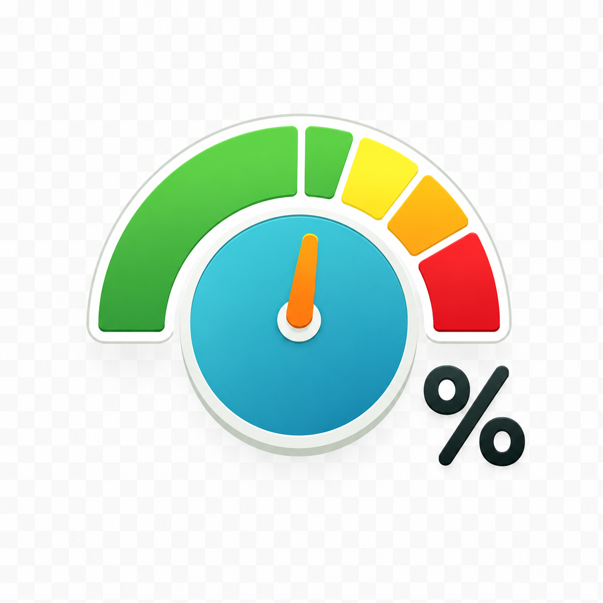
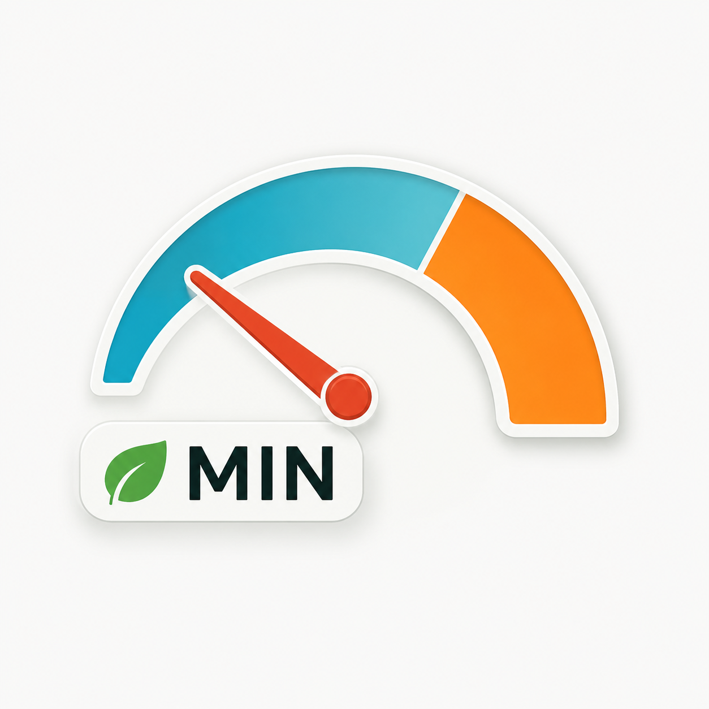
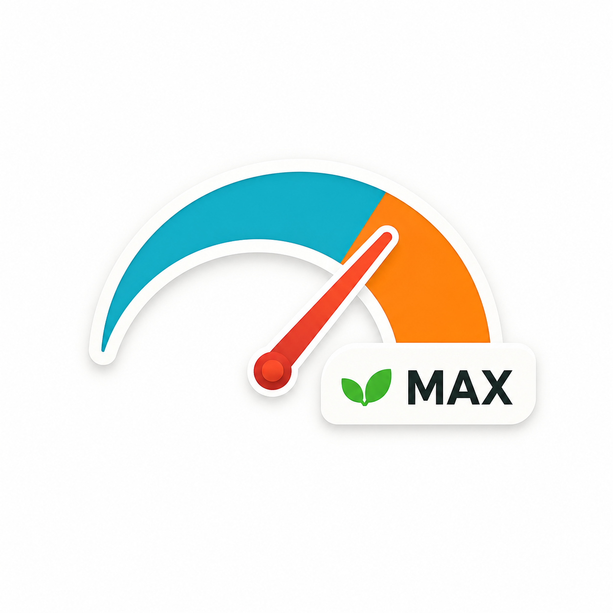

Ganancias del motor

Ganancia Proporcional (P)
4
Más alto = respuesta más agresiva del volante.

Mínimo para mover (PWM mín)
10
PWM mínimo que empieza a girar el volante.

Límite máximo (PWM alto)
50
Ángulo de dirección
Cero del WAS · ángulo calculado: 0.00°
Poner WAS en cero

Offset del WAS
0
Cuentas por grado
20
Ackermann
100%

Ángulo máximo
40°
Pure Pursuit

Respuesta de dirección (Look Ahead)
2.5s
RápidoLento
Integral
20%
Corrige lentamente el error de trayecto (cross-track).
Ganancias Stanley

Distancia (cross-track)
1.0
Rumbo (heading error)
1.0
Integral
0%
Pure Pursuit avanzado

Factor de velocidad (Look Ahead Mult)
0.6

Factor de captura (Acquire)
0.75
Acquire = Factor × Look Ahead.
Zona muerta (Dead Zone)
°
s
Sensor de giro
 Encoder / Cuentas
Encoder / Cuentas Presión
Presión Corriente
CorrienteLos tres tipos de sensor son excluyentes.
punto de disparo
Lectura del sensor
0%
Inversiones y módulo
 DanfossInvertir WAS
DanfossInvertir WAS Invertir motor
Invertir motor Invertir relés
Invertir relés
Driver de motor
Conversor A2D
Habilitación de dirección (Steer Enable)
Eje IMU
Botón: presiona ON, presiona OFF. · Switch: presionado ON, soltado OFF.
Ajustes de guiado
Compensación de giro en U (U-Turn)
-5
AfueraAdentro
Grados por grado de inclinación (Side Hill)
5
Modo y reversa
 Modo Stanley / Pure Pursuit
Modo Stanley / Pure Pursuit Dirigir en retroceso
Dirigir en retrocesoSmart WAS
Cero automático · Listo · Muestras: 0 · Confianza: 0%
Límites de velocidad de dirección

Límite de funciones (giros manuales)
Velocidad máxima para funciones de guiado

Velocidad mínima
AutoSteer se activa a partir de
Velocidad máxima
AutoSteer se desactiva por encima de
En la línea

Ancho de línea
Distancia de nudge (snap)
Búsqueda de próxima línea
Guidance look-ahead
cm por píxel
Barra de guiado
 Mostrar barra en pantalla
Mostrar barra en pantalla